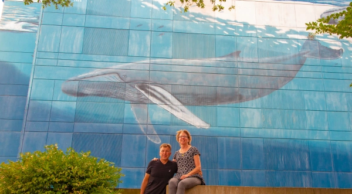

In Search of Wyland Walls

The wall in Norfolk is in the harbor area. There is a great walkway there that offers a view of the large shipyards across the water and along a World War 2 battleship. The area was pretty quiet with only a few people around. Since it was the convention center area my guess the crowds are based on what is going on at there. “Humpbacks off the Virginia Coast” was easy to find and looks good although part of it is obscured by the construction of the adjacent building.
Dominion Towers
999 Waterside Drive
Norfolk, Virginia
280 Feet Long x 80 Feet High
Dedicated August 23rd, 1993
Excerpt from @wylandfoundation on Instagram
Wyland was battling the flu when he pulled into Norfolk, Virginia. When he gazed up at the wall selected for the mural he was unsure about whether he would have the stamina to complete the project in just six days. It was one of the largest walls on the tour, 260 feet long and 60 feet high. However, when Norfolk Mayor Mason Andrews declared the first day “Wyland Day” at the opening press conference, the fatigued artist grabbed a second wind and worked from dusk to dawn until the mural was finished.
“Tens of thousands of people came down to watch, and the police had to put up barriers to control the crowds,” Wyland recalls. “I was sore all over from the flu, but there was something about thousands of people watching every move I made while I worked. It was very motivational – to the point where aches and pains no longer mattered.” The entire city embraced the Whaling Wall and, with the help of many dedicated local volunteers, it was finished at sunset on the sixth and final day.
The mural depicts humpbacks, dolphins and tuna and is visible both from the Elizabeth River and Waterside Drive. Wyland dedicated the Whaling Wall to Jacques Cousteau, who had inspired him as a youth to focus on whales and marine life as his art subjects. While in Norfolk, Wyland visited the Cousteau Society in Chesapeake, Virginia, where he was greeted by a very friendly staff. He left one of his bronze sculptures as a gift to Mr. Cousteau, who wrote him a personal “thank you” letter.